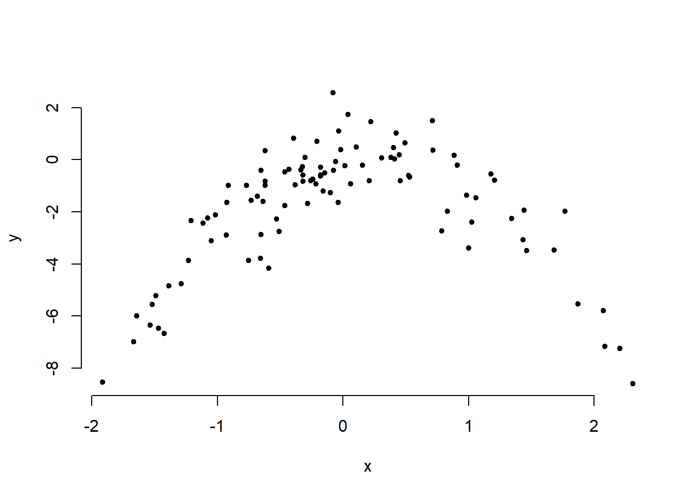

Load the full data set.
load("./data/BSAS_manip.RData")
df <- data2 # make copy with shorter name
rm(data2) # remove originalRSex, urban, and HHInc to predict over.estimate.Note, RSex and urban are categorical variables. Categorical variables with more than 2 categories have to be declared factor variables or broken up into dummy variables manually. We show both below but breaking up RSex is not necessary because it has only 2 categories.
# declaring factor
df$urban <- factor(df$urban, labels = c("rural", "partly rural", "partly urban", "urban"))
# manual dummy coding
df$female <- ifelse(df$RSex == 2, yes = 1, no = 0)
set.seed(666)
glm.fit <- glm(over.estimate ~ female + urban + HHInc, data = df, family = binomial(link = "logit"))
summary(glm.fit)##
## Call:
## glm(formula = over.estimate ~ female + urban + HHInc, family = binomial(link = "logit"),
## data = df)
##
## Deviance Residuals:
## Min 1Q Median 3Q Max
## -2.1204 -1.1808 0.6304 0.8285 1.2889
##
## Coefficients:
## Estimate Std. Error z value Pr(>|z|)
## (Intercept) 1.56226 0.24685 6.329 2.47e-10 ***
## female 0.58640 0.14355 4.085 4.41e-05 ***
## urbanpartly rural -0.05894 0.20121 -0.293 0.7696
## urbanpartly urban 0.29876 0.20443 1.461 0.1439
## urbanurban 0.36467 0.21759 1.676 0.0937 .
## HHInc -0.10362 0.01600 -6.477 9.34e-11 ***
## ---
## Signif. codes: 0 '***' 0.001 '**' 0.01 '*' 0.05 '.' 0.1 ' ' 1
##
## (Dispersion parameter for binomial family taken to be 1)
##
## Null deviance: 1236.9 on 1048 degrees of freedom
## Residual deviance: 1161.4 on 1043 degrees of freedom
## AIC: 1173.4
##
## Number of Fisher Scoring iterations: 4val.err <- function(df){
# a.
train <- sample(nrow(df), size = nrow(df) *.5, replace = FALSE )
# b.
m <- glm(over.estimate ~ female + urban + HHInc, data = df,
family = binomial(link = "logit"), subset = train)
# c.
p <- predict(m, newdata = df[-train,], type = "response")
out <- ifelse( p > 0.5, yes = 1, no = 0)
# d.
return( mean( out != df$over.estimate[-train]) )
}
# call the function (the only argument it needs is the name of the data set)
val.err( df = df)## [1] 0.2628571The error rate in the test set is \(25\%\).
for (a in 1:3) print(val.err( df = df))## [1] 0.28
## [1] 0.2457143
## [1] 0.2971429The error rate averages to roughly \(27\%\) in the three trials.
train <- sample(nrow(df), size = nrow(df) *.5, replace = FALSE)
m2 <- glm(over.estimate ~ female + urban + HHInc + Ukip + BNP,
data = df, family = binomial, subset = train)
p <- predict( m2, newdata = df[-train, ], type = "response")
out <- ifelse( p > 0.5, yes = 1, no = 0)
mean( out != df$over.estimate[-train] )## [1] 0.2914286The error rate remains at roughly \(27\%\). Adding the two dummies did not appear to improve prediction accuracy.
over.estimate using paper and religious.m1 <- glm(over.estimate ~ paper + religious, data = df, family = binomial)
summary(m1)##
## Call:
## glm(formula = over.estimate ~ paper + religious, family = binomial,
## data = df)
##
## Deviance Residuals:
## Min 1Q Median 3Q Max
## -1.6602 -1.5519 0.7734 0.8325 0.8445
##
## Coefficients:
## Estimate Std. Error z value Pr(>|z|)
## (Intercept) 0.84767 0.11092 7.642 2.13e-14 ***
## paper 0.03381 0.13939 0.243 0.808
## religious 0.20616 0.13890 1.484 0.138
## ---
## Signif. codes: 0 '***' 0.001 '**' 0.01 '*' 0.05 '.' 0.1 ' ' 1
##
## (Dispersion parameter for binomial family taken to be 1)
##
## Null deviance: 1236.9 on 1048 degrees of freedom
## Residual deviance: 1234.6 on 1046 degrees of freedom
## AIC: 1240.6
##
## Number of Fisher Scoring iterations: 4over.estimate using paper and religious using all but the first observation.m2 <- glm(over.estimate ~ paper + religious, data = df[-1, ], family = binomial)
summary(m2)##
## Call:
## glm(formula = over.estimate ~ paper + religious, family = binomial,
## data = df[-1, ])
##
## Deviance Residuals:
## Min 1Q Median 3Q Max
## -1.6589 -1.5558 0.7725 0.8315 0.8414
##
## Coefficients:
## Estimate Std. Error z value Pr(>|z|)
## (Intercept) 0.85632 0.11122 7.699 1.37e-14 ***
## paper 0.02819 0.13951 0.202 0.84
## religious 0.20027 0.13903 1.440 0.15
## ---
## Signif. codes: 0 '***' 0.001 '**' 0.01 '*' 0.05 '.' 0.1 ' ' 1
##
## (Dispersion parameter for binomial family taken to be 1)
##
## Null deviance: 1234.3 on 1047 degrees of freedom
## Residual deviance: 1232.2 on 1045 degrees of freedom
## AIC: 1238.2
##
## Number of Fisher Scoring iterations: 4p <- predict(m2, newdata = df[1,], type = "response")
out <- ifelse( p > 0.5, yes = 1, no = 0)
out == df$over.estimate[1]## 1
## FALSEThe first observation was classified incorrectly.
Write a for loop from \(i=1\) to \(i=n\), where \(n\) is the number of observations in the data set, that performs each of the following steps:
over.estimate using paper and religious.pred.all <- function(df, idx){
# a.
m <- glm(over.estimate ~ paper + religious, data = df[-idx,], family = binomial)
# b.
p <- predict(m, newdata = df[idx, ], type = "response")
# c.
exp.out <- ifelse( p > 0.5, yes = 1, no = 0)
# d.
return(ifelse( exp.out != df$over.estimate[idx], yes = 1, no = 0))
}
n.misclassifications <- 0
for (a in 1: nrow(df)) n.misclassifications <- n.misclassifications + pred.all(df, a)
n.misclassifications## 1
## 290We make 290 errors.
n.misclassifications / nrow(df)## 1
## 0.2764538We misclassify \(28\%\) of the cases according to LOOCV.
set.seed(1)
y <- rnorm(100)
x <- rnorm(100)
y <- x -2*x^2 + rnorm(100)In this data set, what is \(n\) and what is \(p\)? Write out the model used to generate the data in equation form.
\(n = 100\), \(p = 2\); \(Y=X-2X^{2}+\epsilon\)
plot( y ~ x, bty = "n", pch = 20)
Quadratic plot. \(X\) from about \(-2\) to \(2\). \(Y\) from about \(-8\) to \(2\).
Set a random seed, and then compute the LOOCV errors that result from fitting the following four models using least squares:
Note, you may find it helpful to use the data.frame() function to create a single data set containing both \(X\) and \(Y\).
library(boot)##
## Attaching package: 'boot'## The following object is masked from 'package:survival':
##
## amldat <- data.frame(x,y)
set.seed(1)
# a.
m <- glm(y ~ x)
cv.glm( dat, m)$delta## [1] 5.890979 5.888812# b.
m <- glm( y ~ poly(x,2))
cv.glm(dat, m)$delta## [1] 1.086596 1.086326# c.
m <- glm( y ~ poly(x, 3) )
cv.glm(dat, m)$delta## [1] 1.102585 1.102227# d.
m <- glm( y ~ poly(x, 4) )
cv.glm( dat, m)$delta## [1] 1.114772 1.114334set.seed(10)
# a.
m <- glm(y ~ x)
cv.glm( dat, m)$delta## [1] 5.890979 5.888812# b.
m <- glm( y ~ poly(x,2))
cv.glm(dat, m)$delta## [1] 1.086596 1.086326# c.
m <- glm( y ~ poly(x, 3) )
cv.glm(dat, m)$delta## [1] 1.102585 1.102227# d.
m <- glm( y ~ poly(x, 4) )
cv.glm( dat, m)$delta## [1] 1.114772 1.114334Exact same, because LOOCV will be the same since it evaluates \(n\) folds of a single observation.
The quadratic polynomial had the lowest LOOCV test error rate. This was expected because it matches the true form of \(Y\).
summary(m)##
## Call:
## glm(formula = y ~ poly(x, 4))
##
## Deviance Residuals:
## Min 1Q Median 3Q Max
## -2.8914 -0.5244 0.0749 0.5932 2.7796
##
## Coefficients:
## Estimate Std. Error t value Pr(>|t|)
## (Intercept) -1.8277 0.1041 -17.549 <2e-16 ***
## poly(x, 4)1 2.3164 1.0415 2.224 0.0285 *
## poly(x, 4)2 -21.0586 1.0415 -20.220 <2e-16 ***
## poly(x, 4)3 -0.3048 1.0415 -0.293 0.7704
## poly(x, 4)4 -0.4926 1.0415 -0.473 0.6373
## ---
## Signif. codes: 0 '***' 0.001 '**' 0.01 '*' 0.05 '.' 0.1 ' ' 1
##
## (Dispersion parameter for gaussian family taken to be 1.084654)
##
## Null deviance: 552.21 on 99 degrees of freedom
## Residual deviance: 103.04 on 95 degrees of freedom
## AIC: 298.78
##
## Number of Fisher Scoring iterations: 2p-values show statistical significance of linear and quadratic terms, which agrees with the CV results.